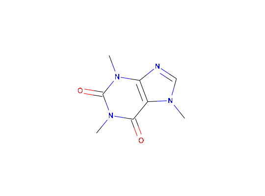

# S3 method for chent plot(x, ...)
grid.picturePlot method for chent objects
PubChem: http://pubchem.ncbi.nlm.nih.gov/rest/pug/compound/name/cids/JSON Found 1 entries in PubChem, using the first one. http://pubchem.ncbi.nlm.nih.gov/rest/pug/compound/cid/property/MolecularFormula,MolecularWeight,CanonicalSMILES,IsomericSMILES,InChI,InChIKey,IUPACName,XLogP,ExactMass,MonoisotopicMass,TPSA,Complexity,Charge,HBondDonorCount,HBondAcceptorCount,RotatableBondCount,HeavyAtomCount,IsotopeAtomCount,AtomStereoCount,DefinedAtomStereoCount,UndefinedAtomStereoCount,BondStereoCount,DefinedBondStereoCount,UndefinedBondStereoCount,CovalentUnitCount,Volume3D,XStericQuadrupole3D,YStericQuadrupole3D,ZStericQuadrupole3D,FeatureCount3D,FeatureAcceptorCount3D,FeatureDonorCount3D,FeatureAnionCount3D,FeatureCationCount3D,FeatureRingCount3D,FeatureHydrophobeCount3D,ConformerModelRMSD3D,EffectiveRotorCount3D,ConformerCount3D,Fingerprint2D/JSON http://pubchem.ncbi.nlm.nih.gov/rest/pug/compound/cid/synonyms/JSON Trying to get chemical information from RDKit using PubChem_Canonical SMILES CN1C=NC2=C1C(=O)N(C(=O)N2C)C Did not find chyaml file ./caffeine.yaml<chent> Identifier $identifier caffeine InChI Key $inchikey RYYVLZVUVIJVGH-UHFFFAOYSA-N SMILES string $smiles: PubChem_Canonical "CN1C=NC2=C1C(=O)N(C(=O)N2C)C" Molecular weight $mw: 194.2 PubChem synonyms (up to 10): [1] "2519" "caffeine" [3] "1,3,7-Trimethylxanthine" "Methyltheobromine" [5] "Guaranine" "Cafeina" [7] "Koffein" "Mateina" [9] "Thein" "Theine"